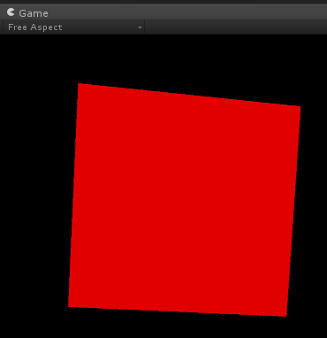

Writing a MetaBehaviour
To handle events and specifications of gestures
Overview
This guide will show you how to use the MetaBehaviour class (an extension of MonoBehaviour) to handle and react to gesture-based events (eg. grabbing an object).
By the end of this guide, you will be able to:
- Create a new script that inherits from the
MetaBehaviour class
- Handle a grab event to make a cube change colour
Requirements
This tutorial also assumes that you have already completed the following:
Steps
Setting up
- Plug in and set up your Meta glasses
- Run Unity
- Open the 'Meta' project
- Open your 'Hello MetaWorld' scene
Adding and editing a script on a GameObject to use MetaBehaviour
- Select the 'Cube' from your 'Hello MetaWorld App' GameObject
- Expand the 'Hello MetaWorld App' GameObject in the Hierarchy window by clicking the triangle next to the name
- Select the 'Cube'
- Uncheck the 'Jaysify' checkbox in the
MetaBody script in the Inspector window
- Add a new C# script called 'MyCubeScript' to the 'Cube'
- Click Add Component at the bottom of the Inspector window
- Select New Script >
- Type in 'MyCubeScript' with language 'CSharp' and click 'Create and Add'
- Open
MyCubeScript for editing by double-clicking the 'MyCubeScript' script property in the Inspector window
- Add
Using Meta; below the Unity namespace libraries
- Add the following lines:
using UnityEngine;
using Systems.Collections;
using Meta;
- Edit the script so that the
MyCubeScript class inherits from MetaBehaviour instead of MonoBehaviour
- Find the following line:
public class MyCubeScript : MonoBehaviour {
- Change it to:
public class MyCubeScript : MetaBehaviour {
- Add a
OnGrab() and OnGrabRelease() method to handle a grab event and make the cube turn red when grabbed and white when released
- Add the following lines inside the
MyCubeScript class below the Update() function: public void OnGrab() {
renderer.material.color = Color.red;
}
public void OnGrabRelease() {
renderer.material.color = Color.white;
}
- Save your changes to the script
- Put on your Meta glasses
- Save the scene and click the Play button to run the scene
- Turn your head to look for the 'Cube' (or push F4 to recentre the Game View)
- Grab the 'Cube' and it should change colour from white to red
Cube is white when ungrabbed

Cube is red when grabbed
Conclusion
You have now learned how to use the MetaBehaviour class. There are many other handlers available, including OnTouch(), that will allow you to easily deal with any gestural interaction.
The next tutorial will show you the basics of using MGUI to create a 3D holographic interface.
Next tutorial: Designing an MGUI panel

 1.8.8
1.8.8